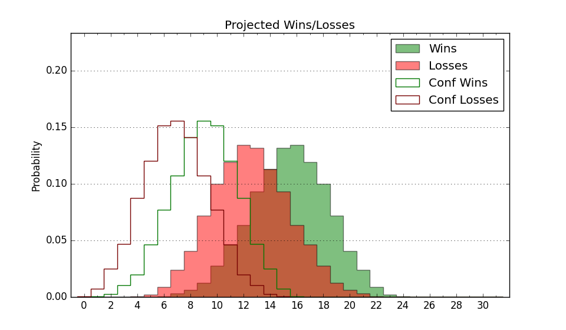

| Home | Game Probabilities | Conferences | Preseason Predictions | Odds Charts | NCAA Tournament |
| City: | Rock Hill, South Carolina | |
| Conference: | Big South (1st)
| |
| Record: | 0-0 (Conf) 3-3 (Overall) | |
| Ratings: | Comp.: -1.5 (167th) Net: -0.6 (166th) Off: 97.7 (261st) Def: 98.3 (104th) SoR: 0.3 (229th) |
| Remaining | ||||||
|---|---|---|---|---|---|---|
| Date | Opponent | Win Prob | Pred. | |||
| 11/25 | LIU Brooklyn (347) | 91.0% | W 82-65 | |||
| 12/3 | @ Queens (320) | 67.0% | W 77-72 | |||
| 12/7 | Coastal Carolina (287) | 83.2% | W 75-64 | |||
| 12/17 | @ Florida St. (89) | 18.0% | L 69-81 | |||
| 12/21 | Mercer (241) | 76.7% | W 77-69 | |||
| 12/29 | @ Indiana (23) | 5.0% | L 63-85 | |||
| 1/2 | USC Upstate (330) | 88.3% | W 85-70 | |||
| 1/4 | @ Radford (238) | 48.6% | L 75-76 | |||
| 1/8 | @ Gardner Webb (127) | 26.7% | L 69-76 | |||
| 1/11 | Longwood (189) | 68.9% | W 74-68 | |||
| 1/15 | Charleston Southern (258) | 79.5% | W 77-68 | |||
| 1/18 | @ UNC Asheville (198) | 40.7% | L 72-75 | |||
| 1/25 | @ High Point (115) | 24.4% | L 72-80 | |||
| 1/29 | Presbyterian (215) | 72.8% | W 75-68 | |||
| 2/1 | Gardner Webb (127) | 55.3% | W 73-72 | |||
| 2/5 | @ Charleston Southern (258) | 53.2% | W 73-72 | |||
| 2/8 | @ USC Upstate (330) | 68.9% | W 81-75 | |||
| 2/12 | Radford (238) | 76.3% | W 80-72 | |||
| 2/15 | High Point (115) | 52.4% | W 77-76 | |||
| 2/19 | @ Presbyterian (215) | 44.0% | L 71-73 | |||
| 2/26 | @ Longwood (189) | 39.5% | L 69-72 | |||
| 3/1 | UNC Asheville (198) | 70.1% | W 77-71 | |||
| Previous | Game Score | |||||
| Date | Opponent | Win Prob | Result | Off | Def | Net |
| 11/9 | Little Rock (209) | 72.3% | W 82-67 | -5.4 | 16.5 | 11.1 |
| 11/11 | @Virginia Tech (112) | 23.9% | L 52-58 | -19.2 | 16.7 | -2.5 |
| 11/15 | (N) William & Mary (247) | 65.9% | W 86-85 | 2.6 | -7.2 | -4.6 |
| 11/16 | Georgia Southern (225) | 74.6% | L 87-89 | -8.8 | -3.5 | -12.3 |
| 11/17 | North Carolina Central (253) | 79.1% | W 77-75 | 1.9 | -5.7 | -3.8 |
| 11/22 | @Louisville (55) | 9.3% | L 61-76 | -11.1 | 9.0 | -2.1 |
| Stats & Trends | |||||
|---|---|---|---|---|---|
| Current | Day | Week | Month | Season | |
| Composite | -1.5 | -0.5 | +0.7 | +0.9 | +0.9 |
| Comp Rank | 167 | -7 | +6 | +7 | +7 |
| Net Efficiency | -0.6 | -1.7 | +1.0 | -- | -- |
| Net Rank | 166 | -6 | +18 | -- | -- |
| Off Efficiency | 97.7 | -2.6 | +5.1 | -- | -- |
| Off Rank | 261 | -35 | +36 | -- | -- |
| Def Efficiency | 98.3 | +0.9 | -4.2 | -- | -- |
| Def Rank | 104 | +2 | -32 | -- | -- |
| SoS Rank | 225 | +53 | +11 | -- | -- |
| Exp. Wins | 15.4 | -0.7 | -0.4 | -0.4 | -0.4 |
| Exp. Conf Wins | 9.1 | -0.4 | -0.2 | -0.4 | -0.4 |
| Conf Champ Prob | 17.1 | -1.3 | +2.0 | -1.9 | -1.9 |

| Advanced Stats | ||
|---|---|---|
| Stat | Value | Rank |
| Off Eff FG % | 0.444 | 301 |
| Off Ast Ratio | 0.098 | 350 |
| Off ORB% | 0.299 | 155 |
| Off TO Rate | 0.149 | 167 |
| Off FT Ratio | 0.449 | 51 |
| Def Eff FG % | 0.486 | 128 |
| Def Ast Ratio | 0.121 | 69 |
| Def ORB% | 0.294 | 216 |
| Def TO Rate | 0.180 | 69 |
| Def FT Ratio | 0.374 | 228 |